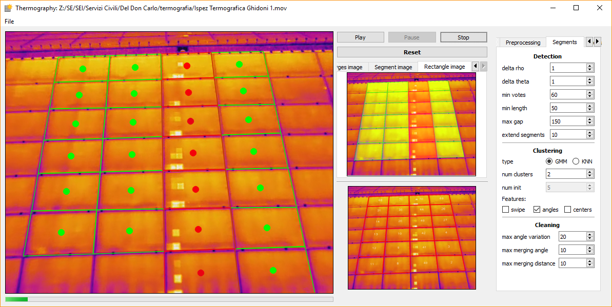
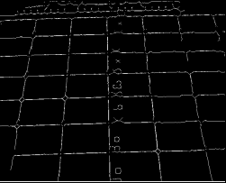
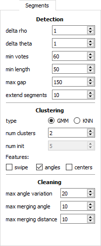

| Branch | Linux |
|---|---|
| Master |  |
| Devel |  |
This repository contains the implementation of a feasibility study for automatic detection of defected solar panel modules. The developed framework has been coined Thermography due to the fact that the input data to the system is a sequence of images in the infrared spectrum.

Thermography in action
Structure¶
The repository is structured as follows:
- Documentation of the Thermography repository.
- GUI source code associated to the graphical user interface for interacting with the Thermography framework.
- Log files generated at runtime.
- Resources used by the Thermography framework.
- Thermography core source code related to detection and classification of solar panel modules.
The python scripts located in the root directory can be used to launch different executables which exploit the Thermography framework for solar panel module detection and classification.
Installation¶
Download the git repository:
$ git clone https://github.com/cdeldon/thermography.git
$ cd thermography/
Install the prerequisites:
$ pip install -r requirements.txt
Example scripts¶
Here follows a description of the example scripts in the root directory of the Thermography repository.
Application¶
Running the main_app.py script a default video is loaded and each frame is processed for module extraction. This script’s purpose is to show the workflow of the Thermography framework for a simple video.
GUIs¶
A graphical user interface is provided for interacting with the Thermography framework. In particular the following executables are available:
- Dataset creation script used to facilitate the creation of a labeled dataset of images representing solar panel modules.
- ThermoGUI graphical interface which allows the used to interact with the Thermography framework and to analyze a new sequence of frames on the fly.
The executables with a graphical interface offer the following tools and visualizations: 
The GUI presents different views of the processed input video, in particular the following views are available:
| Attention image | Edge image |
|---|---|
 |
 |
| Segment image | Rectangle image |
|---|---|
 |
 |
The lateral toolbar offers runtime parameter tuning with immediate application:
| Video tab | Prepr. tab | Segment tab | Modules tab |
|---|---|---|---|
 |
 |
 |  |
Training and restoring¶
Executables for training and restoring a learning system are offered with the Thermography framework. These scripts can be used and adapted for training a new classifier which can the be integrated with the GUIs for real time classification of the detected solar panel modules.
Training trains a model to classify input images with the correct label.
Restoring restores a trained model with associated weights and outputs the classification for a set of input images. ### Tests The base functionalities of the Thermography framework are tested using unittests. The tests can be executed as follows:
$ cd thermography/ $ python -m unittest discover thermography/test [-v]
The same tests can be run as a normal python script as follows:
$ cd thermography/
$ python main_test.py